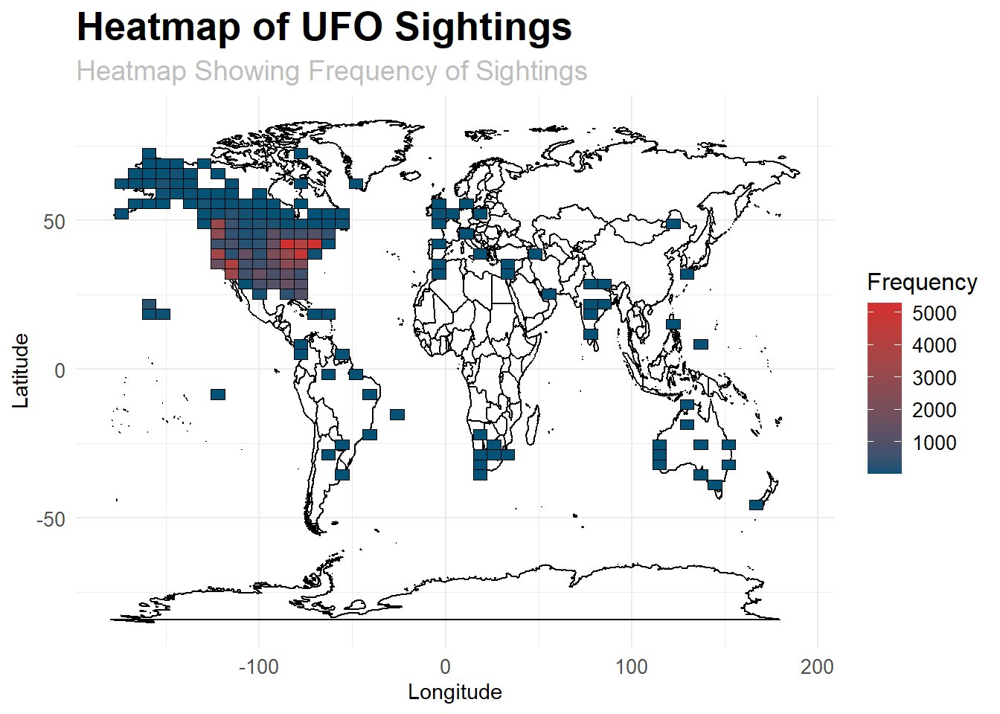
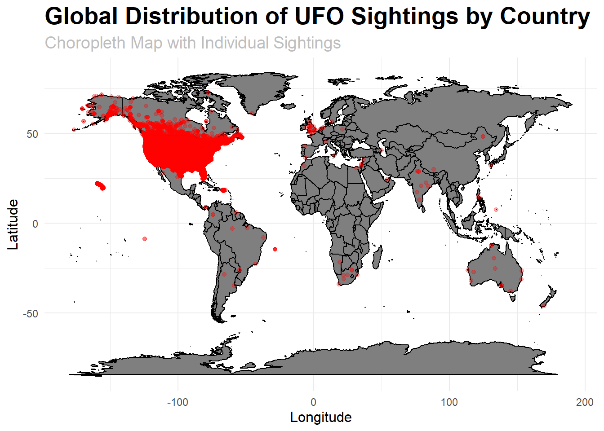
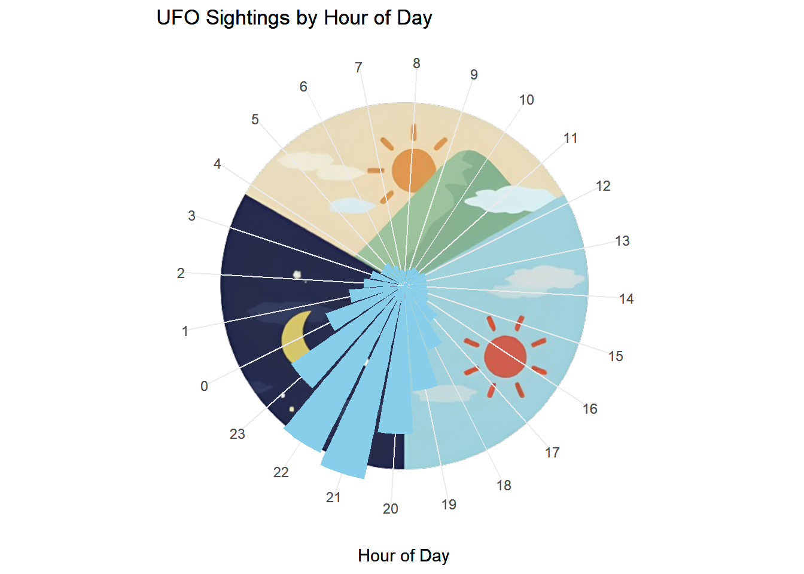
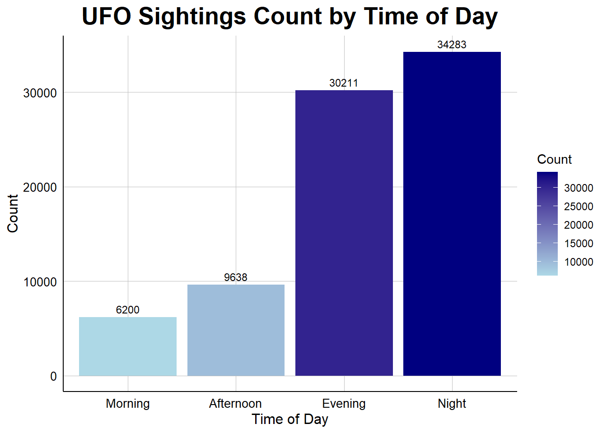

A Data-Driven Investigation into Global UFO Sightings
Author
Plot Crafters
Abstract
The project delves into the realm of UFO sightings by conducting a data-driven investigation into a comprehensive dataset comprising over 80,000 records dating back to 1949. Leveraging information such as latitude, longitude, date, and detailed descriptions of each sighting, the analysis aims to unravel temporal, spatial, and descriptive patterns associated with these unidentified flying objects. The dataset, originating from NUFORC, provides a robust foundation for exploring global UFO activities, and the project employs data wrangling, exploratory data analysis, and statistical approaches to answer key questions about the frequency and distribution of sightings worldwide.
Utilizing statistical approaches like geospatial clustering and spatial autocorrelation, the project aims to provide a comprehensive understanding of the worldwide prevalence of UFO sightings. Beyond the analytical aspects, the project emphasizes the broader impact on public perception, scientific inquiry, and the potential for future research. The dissemination of findings holds the promise of not only contributing to scientific discourse but also fostering public engagement and education, thereby enhancing awareness and knowledge about UFO sightings.
Introduction
The dataset under investigation is drawn from the TidyTuesday project, presenting a comprehensive compilation of records documenting encounters with unidentified flying objects (UFOs). With origins tracing back to diverse temporal, spatial, and descriptive dimensions, this dataset unfolds as a multifaceted exploration of the mysterious world of UFO sightings. Imbued with details such as precise date and time stamps, geographical coordinates, and intricate descriptions of each reported incident, this dataset forms a robust foundation for a thorough examination. As we embark on this data-driven journey, our objective is to discern latent patterns and unveil nuanced insights, contributing to a heightened comprehension of the intricate temporal and spatial dynamics characterizing UFO encounters on a global scale.
This repository of UFO sightings serves as a captivating reservoir for exploration, providing researchers, data enthusiasts, and the wider public with an opportunity to dissect the enigmatic phenomena surrounding unidentified flying objects. By delving into the layers of information embedded within this dataset, we aim to demystify the patterns and intricacies that define these sightings, fostering a deeper understanding of the uncharted territories within the UFO phenomenon.
Question 1 : How many UFO sightings have been reported worldwide, and are there particular regions where these sightings occur more frequently?
Introduction
For this question we want to know where the frequency and location, or the concentration, of UFO sightings. Under the ufo_sightings dataset we require the longitude and latitude of the sighting as well as the count. We’re interested in this question because it’s in our best interest to know where delusional people who claim ufo sightings are so we can avoid them.
Approach
We first ensure that the dataset is clean, with no missing or invalid values that could affect our analysis. We then calculate summary statistics such as the mean, median, and standard deviation of the number of sightings globally to give us an idea of the distribution of ufo sightings.
We then create a geographical visualization where we use latitude, longitude, and state data to create a heatmap and choropleth map to visualize the global distribution of UFO sightings. This will help identify geographical hotspots and trends. For our last visualization we do a spatial analysis via spatial clustering using algorithms like K-means to identify regions with a high concentration of sightings. Additionally, we’ll assess spatial autocorrelation to determine if there are spatial patterns in the distribution of sightings.
Analysis
suppressMessages({library(tidyverse)})
Warning: package 'ggplot2' was built under R version 4.3.3
Warning: package 'tidyr' was built under R version 4.3.3
#> Loading the Dataset #> UFO_Sightingsufo_sightings <- readr::read_csv("https://raw.githubusercontent.com/rfordatascience/tidytuesday/master/data/2019/2019-06-25/ufo_sightings.csv", show_col_types =FALSE)
suppressWarnings({library(ggplot2)# Load world map dataworld_map <-map_data("world")# Read the UFO sightings dataufo_sightings <- readr::read_csv("https://raw.githubusercontent.com/rfordatascience/tidytuesday/master/data/2019/2019-06-25/ufo_sightings.csv", show_col_types =FALSE)# Data Cleaningufo_sightings_clean <- ufo_sightings %>%filter(!is.na(state))# Create Heatmap with map outlineheatmap_with_map <-ggplot() +geom_polygon(data = world_map, aes(x = long, y = lat, group = group), color ="black", fill =NA) +# Map outlinegeom_bin2d(data = ufo_sightings_clean, aes(x = longitude, y = latitude), bins =50, color ="black") +# Heatmapscale_fill_gradient(name ="Frequency", low ="#045275", high ="#D32F2F") +# Color gradientlabs(title ="Heatmap of UFO Sightings", subtitle ="Heatmap Showing Frequency of Sightings",x ="Longitude", y ="Latitude") +# Axis labelstheme_minimal() +# Minimal themetheme(plot.title =element_text(size =20, face ="bold"), # Title font size and styleplot.subtitle =element_text(size =14, color ="gray"), # Subtitle font size and coloraxis.text =element_text(size =10), # Axis text sizelegend.title =element_text(size =12), # Legend title sizelegend.text =element_text(size =10)) # Legend text size# Print the heatmap with map outlineprint(heatmap_with_map)})

This heatmap of UFO sightings worldwide, where each bin represents a certain area on the map, and the color intensity represents the frequency of sightings in that area. This visualization will help us identify regions with higher concentrations of UFO sightings. In the above Heatmap, we can tell most of the sightings are around the USA region and little over East Europe, the frequency is not distributed around as expected, the entire map is below 2000 sightings and UAS having higher than 2000. This suggests that while UFO sightings are reported worldwide, they remain rare events. Factors such as population density, cultural beliefs, and reporting biases likely contribute to the observed distribution patterns. Further exploration of these factors is necessary to better understand the underlying reasons for the observed variations in UFO sighting frequencies.
suppressWarnings({# Count sightings by countrysightings_by_country <- ufo_sightings_clean %>%count(country)# Read world map data from ggplot2world_map <-map_data("world")# Merge with sightings dataworld_map_with_sightings <-left_join(world_map, sightings_by_country, by =c("region"="country"))# Create Choropleth Map with individual sightings as pointschoropleth_map <-ggplot() +geom_polygon(data = world_map_with_sightings, aes(x = long, y = lat, group = group, fill = n), color ="black") +geom_point(data = ufo_sightings_clean, aes(x = longitude, y = latitude), color ="red", alpha =0.3) +labs(title ="Global Distribution of UFO Sightings by Country",subtitle ="Choropleth Map with Individual Sightings",x ="Longitude",y ="Latitude",fill ="Number of Sightings") +# Add legend titletheme_minimal() +# Use minimal themetheme(plot.title =element_text(size =20, face ="bold"), # Adjust title font size and styleplot.subtitle =element_text(size =14, color ="gray"), # Adjust subtitle font size and coloraxis.title.x =element_text(size =12), # Adjust x-axis title sizeaxis.title.y =element_text(size =12), # Adjust y-axis title sizelegend.title =element_text(size =12), # Adjust legend title sizelegend.text =element_text(size =10)) +# Adjust legend text sizescale_fill_gradient(name ="Number of Sightings", low ="#FFEDA0", high ="#F44336") # Adjust color gradient# Print the choropleth mapprint(choropleth_map)})

This graph overlays the individual UFO sightings as red points on top of the choropleth map, allowing you to see both the country-level distribution and the specific locations of sightings. This along side the heatmap will give a better understanding where the freaquency and distribution of UFO sightings take place.
Discussion
The heat map and choropleth map above show that most UFO sightings occur in the USA, especially in the West Bay area. While most sightings are in the West Bay, some are also seen in the northern and eastern USA.
We speculate that there are several reasons for such distribution of sightings. First, higher population densities in the USA contribute to more reported UFO sightings, as there are more observers to witness and report such phenomena. Second, the USA’s rich history of UFO-related media, including movies and TV shows, may influence public perception and reporting behavior, leading to increased awareness and reporting of UFO sightings. Third, the presence of military installations in certain regions, coupled with the testing of experimental aircraft or other technology, may result in misidentifications and increased UFO sightings.
Question 2: Is there any specific time of the day when UFO sighting are more prevalent?
Introduction
For this question we want to visualize any temporal trends in UFO sightings throughout the day. We utilize the hour_of_day and sighting count variable from the ufo_sightings_with_time_of_day dataset. We’re interested in this question because we want to see what time of day people are most delusional.
Approach
We loaded the dataset ufo_sightings from the “TidyTuesday” source using the read.csv function in R. We verified the date_time column to ensure if it is the correct data type. After that we created a new variable under the name time_of_day, and upon extracting time from date_time variable we created the following time bins: morning_hours (6:00 AM - 11:59 AM), afternoon_hours(12:00 PM - 17:59 PM), evening_hours(18:00 PM - 21:59 PM), and night_hours(22:00 PM - 5:59 AM). We analyzed sighting patterns within each bin.
Lastly, we grouped the data for each bin and counted the number of ufo sightings and saved it in dataset under the name ufo_sightings_with_time_of_day.csv. We then plotted the ufo_sightings_with_time_of_day.csv dataset using horizontal bar chart with different time bins at x-axis and count of ufo_sightings at y-axis.
Analysis
suppressWarnings({# Load necessary librarieslibrary(ggplot2)library(png)library(tidyverse)library(lubridate)suppressMessages({ library(viridis)})library(png)suppressMessages({ library(cowplot)})# Read the dataufo_sightings <- readr::read_csv("https://raw.githubusercontent.com/rfordatascience/tidytuesday/master/data/2019/2019-06-25/ufo_sightings.csv", show_col_types =FALSE)# Convert character strings of date_time variable into POSIXct formatufo_sightings$date_time <-as.POSIXct(ufo_sightings$date_time, format ="%m/%d/%Y %H:%M")# Extract the hour componentufo_sightings$hour_of_day <-hour(ufo_sightings$date_time)# Create a summary table for counts of sightings per hourhourly_counts <-table(ufo_sightings$hour_of_day)# Convert the summary table to a data framehourly_counts_df <-data.frame(hour =as.numeric(names(hourly_counts)), count =as.numeric(hourly_counts))# Plotting with polar coordinatesbar_plot_polar <-ggplot(hourly_counts_df, aes(x =factor(hour), y = count)) +geom_bar(stat ="identity", fill ="skyblue") +scale_x_discrete(name ="Hour of Day") +scale_y_continuous(name =NULL) +labs(title ="UFO Sightings by Hour of Day") +theme_minimal() +theme(axis.text.y =element_blank(),axis.line.y =element_blank(),axis.ticks =element_blank(), panel.grid.major.y =element_blank()) +coord_polar(start =-pi/1.45)# Read the imageimg <-readPNG("images/q2Clock.png")ger <- grid::rasterGrob(img, interpolate=TRUE)# Draw the plotcoord_plot <-ggdraw(bar_plot_polar)# Combine the plot and the imagecoord_plot +draw_grob(ger, 0.168, 0.18, 0.65, 0.65) +draw_plot(bar_plot_polar)})

Optimal Visibility: Darker evening skies provide better visibility, aiding in the detection of unusual objects or lights.
Leisure Activities: Evening leisure pursuits, like stargazing and outdoor activities, increase opportunities for people to spot UFOs while relaxing outdoors.
3.Cultural Influence: Cultural depictions of UFO sightings during nighttime and psychological factors may heighten vigilance and reporting of sightings during evening hours.
suppressWarnings({# Load necessary librarieslibrary(tidyverse)#> Loading the Dataset #> UFO_Sightingsufo_sightings <- readr::read_csv("https://raw.githubusercontent.com/rfordatascience/tidytuesday/master/data/2019/2019-06-25/ufo_sightings.csv", show_col_types =FALSE)# Load the lubridate packagelibrary(lubridate)# converting character strings of date_time variable into a format that R can recognize and manipulate as date-time data.ufo_sightings$date_time <-as.POSIXct(ufo_sightings$date_time, format ="%m/%d/%Y %H:%M")# Extracting the hour componenthour_of_day <-hour(ufo_sightings$date_time)# Define time ranges for each binmorning_hours <-6:11afternoon_hours <-12:17evening_hours <-18:21night_hours <-c(22:23, 0:5)# Function to assign time binsassign_time_bin <-function(hour_of_day) {if (hour_of_day %in% morning_hours) {return("Morning") } elseif (hour_of_day %in% afternoon_hours) {return("Afternoon") } elseif (hour_of_day %in% evening_hours) {return("Evening") } else {return("Night") }}library(ggplot2)library(dplyr)# Read the CSV file and prepare the dataufo_data <-read.csv("ufo_sightings_with_time_of_day.csv")# Convert time_of_day to a factor with specified orderufo_data$time_of_day <-factor(ufo_data$time_of_day, levels =c("Morning", "Afternoon", "Evening", "Night"))# Group the data by time_of_day and summarize to calculate count of sightingsufo_summary <- ufo_data %>%group_by(time_of_day) %>%summarize(count =n())# Create the plotggplot(ufo_summary, aes(x = time_of_day, y = count, fill = count)) +geom_bar(stat ="identity") +scale_fill_gradient(name ="Count", low ="#ADD8E6", high ="#000080") +# Use a gradient scale from light blue to navy bluegeom_text(aes(label = count), vjust =-0.5, color ="black", size =3) +theme_minimal() +labs(title ="UFO Sightings Count by Time of Day",x ="Time of Day",y ="Count") +theme(plot.background =element_rect(fill ="white", color =NA), panel.background =element_rect(fill ="white", color =NA), panel.grid.major =element_line(color ="gray", size =0.2), panel.grid.minor =element_blank(),axis.line =element_line(color ="black"),axis.text =element_text(color ="black", size =10), # Adjust size of axis textaxis.title =element_text(color ="black", size =12), # Adjust size of axis titlesplot.title =element_text(hjust =0.5, size =20, color ="black", face ="bold"), legend.position ="right") +# Position legend on the right sideguides(fill =guide_colorbar(title.position ="top", title.vjust =0.5)) })

Discussion
According to the visualization above, it appears, unsurprisingly, that UFO sightings were most frequent at night time, followed by evening, afternoon, and morning. We speculate that this is so because when it is dark out people are less able to distincly recognize what object in the sky they are looking at. Why there are fewer sightings in the morning than in the afternoon makes little sense as there would be enough light in the sky to identify, or not identify, the object.